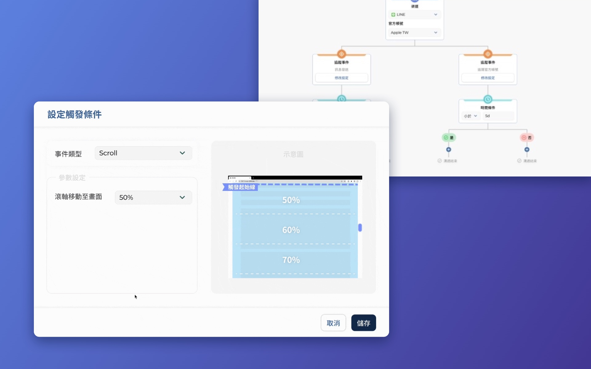

Full-screen reminders
Regular notifications are easy to miss, so reminders take over the whole screen when it’s time.
UI/UX Designer with 6 years of experience
I design B2B/SaaS products and data dashboards across web, mobile apps and admin systems. I start by getting the requirements and workflow rules clear before designing anything. Most recently, I built an app on my own — from product planning and design to implementation.
Parents, kids, pets — everyone you care for has different medication needs, and the more people you look after, the more complicated it gets. MedReminder organizes medications by person and treatment plan, so every dose is clear and caregiving feels a little lighter.
View DemoThe app interface is in Traditional Chinese.

Most medication apps are built around reminders for one person, and fall short when care gets more complex. I identified three common scenarios.

A child’s cold medicine and a parent’s chronic meds come with different schedules and doses.

In multi-pet homes, every animal has its own meds. Relying on memory leads to mix-ups and missed doses.

Bags pile up, it’s unclear which visit each came from, and short-term and long-term meds get mixed up.
Core Design
MedReminder manages medications by treatment plan: meds from the same visit or for the same condition are grouped together. They start together, end together, and can be resumed together.

01
Create a plan for each person, like “Mom · Hypertension,” to keep meds from the same visit together. Each med has its own frequency and start and end dates.

02
Once the illness is over, end the whole plan. Reminders stop for every med in it, nothing counts as missed, and the history is kept. Plans also end automatically when the meds run out.

03
If symptoms return or the doctor prescribes the same meds again, resume it from “Ended plans” — no need to re-enter each medication.
Instead of tracking each medication on its own, the app ties together who takes it, why, and for how long, making short-term and long-term meds easy to tell apart. Ended plans can be resumed if a condition returns, so the record stays complete and continuous.
Caregiver Scenario
Caregivers often remember to log a dose only after they’ve given it. The medication log shows the whole family’s status on one page, so missed entries can be filled in all at once.

01
The calendar flags days with untaken doses. Below, each med is listed by person › plan, showing morning, noon, evening and bedtime status with both symbols and color.

02
Tap a name to jump to that person’s first time slot with untaken doses. Meds from different plans in the same slot can be logged together, with the time set to the original reminder by default.

03
Early-morning hours still count as the previous day, so bedtime meds taken after midnight aren’t marked as missed. Doses from the last 3 days (including today) can be logged; older records are view-only.
The most common problem for caregivers isn’t a missed dose — it’s a dose given but never logged. Logging follows how caregivers actually work: by person, across plans, one time slot at a time. A note reminds users that logging is only a record, and that missed doses should be handled as their doctor or pharmacist advises, keeping records accurate without replacing professional judgment.
Regular notifications are easy to miss, so reminders take over the whole screen when it’s time.

Set reminders using the same wording as the pharmacy label, like “30 minutes after meals” or “at bedtime.”

Connected to Taiwan’s National Health Insurance open data. Type a drug name to see its details.
Development time
50hoursArchitecture 8 hrs, Figma design 6 hrs, AI-assisted development about 36 hrsCross-platform
2platformsReact Native + Expo SDK 56 — one codebase for iOS and AndroidAccessibility
AAcontrastAdjustable text size, dark mode and screen reader supportStudied existing medication apps and mapped caregivers’ pain points and scenarios.
Sketched in Figma and worked out the architecture. Wrote the spec first, then had AI write the code.
Built each screen to spec and ran a first round of testing with 5 personas.
Refined the app based on the results and tested it again.
Design and code share the same tokens, so screens and implementation stay in sync.

Warm earth tones, in light and dark modes.

Figma variables become design tokens in code.

Lets AI read the design files directly and build to match.
AI speeds things up. The judgment calls are mine.
I finished this project in 3 weeks, with AI as the main accelerator. But every product decision — what to build, what to leave out, and what counts as done — was mine.
After finishing each screen, I had AI review a screenshot and adjusted based on its feedback. Its suggestions don’t always fit the product, so I weigh each one before deciding whether to use it.
Example
Seeing “11/19 (Today)” still shown at 00:51, it flagged a date bug.
It’s intentional. Bedtime meds are often taken after midnight, and a 00:00 cutoff would wrongly mark them as missed.
Kept the design and documented it as a design decision.
AI can propose 10 options in seconds, but choosing one takes an understanding of the users and the product.
Define what “done right” means first. Only then does AI’s speed pay off.
AI can spot problems on screen, but how caregivers actually sort their pharmacy bags can only be learned by watching real people.
I don’t want this app to stay a side project. Next, I’ll invite real caregivers to try it, to check whether matching meds to treatment plans is a real pain point — and whether the plan-based design actually solves it.
AI helped me build the product, but only real users can tell me whether it works for them.
Where it goes next will be shaped by their feedback.
B2B and SaaS projects

Staff didn’t look at the screen while scanning, so I redesigned field switching to keep scans uninterrupted.
~20% faster average task time →
Turned tracking setup that needed marketing know-how into a flow with live preview.
Setup time 3 → 1 min →
Connected every step from inquiry to monitoring in a full Web + App proposal.
7 modules · Web + App →